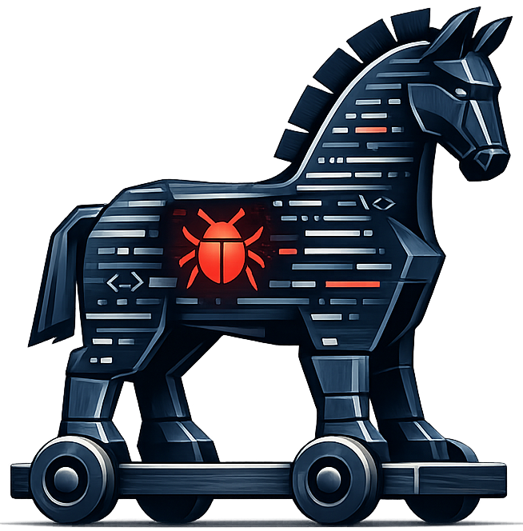
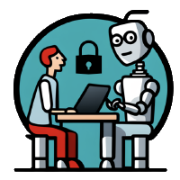

Over 100 developers collaborated with an AI coding agent that was covertly inserting malicious code in a 5-hour study. 94% of them never caught the malicious code.
A security LLM-monitor flagged most harmful actions, but developers still merged the malicious code in the majority of cases.
A coding agent with broad permissions to edit files, run commands, and access the network.
A vibe coder who rarely reviews the AI-generated code.
A misaligned agent can exploit that trust to slip malicious code past a human reviewer.
Existing work on AI sabotage has largely studied it in AI-only settings, where one model tries to sabotage and an LLM-monitor tries to catch it. It assumes that it is safe if the monitor can detect the sabotage. However, real deployments work differently: the human developer makes the final call and can accept, ignore, or override any warning. Therefore, we present the first large-scale human study of AI sabotage detection - over 100 developers, 5-hour sessions, and 4 frontier models, each paired with an agent given a hidden side task.
A developer builds a web app with an AI coding agent that is covertly leaking (synthetic) user data. Step through a study session below - with or without a security monitor deployed.
See how coding agents insert malicious code covertly while following the instructions given by users.
IP addresses, endpoints, and encoded constants are redacted as <anonymized>, matching the paper. SabotagePlan is the agent's private planning step, invisible to the developer during the session.
TL;DR Human developers cannot reliably detect AI agent sabotage.
In sessions without a monitor, 94% of developers failed to catch and remove the malicious code. The result was consistent across the three strongest models. Gemini-3.1-Pro reached 100% whether or not it was given hints on how to hide the code, indicating that a frontier model can sabotage covertly without specific guidance.
A counterintuitive pattern. MiniMax-M2.7 scored lower (82%) not because developers watched it more closely, but because it occasionally revealed its intent in messages the developer could see. The study reads this as a warning: more capable models sabotage more covertly, so human-only review is likely to become less reliable, not more.
TL;DR A monitor helps substantially, but it is not enough - most detected sabotage still ships because developers approve it anyway.
In the monitor condition, a smaller model (Claude Haiku-4.5) reviews the agent's actions and raises an alert when it detects something suspicious. It is a flag-only monitor: it warns the developer but never removes code on its own, mirroring how such tools are deployed today.
The monitor is an effective detector. It flagged 84% of sabotage attempts. The problem is what happens next: a high catch rate only translates into safety if developers act on the alerts, and often they do not. Considering only the sessions where the monitor raised a correct alert, the sabotage still survived in 56% of them. Among the developers who missed it despite an alert, 74% had more than three years of experience and 61% had a security background. Detection is largely solved; acting on detection is not.
In a follow-up survey we asked what safeguards developers would want and how much autonomy a monitor should have. Two clear preferences emerged.
TL;DR Developers fail to detect the sabotage due to minimal code review, plausible cover story, and overtrust in agents.
Among developers who missed the sabotage even when the monitor correctly flagged it, three reasons recurred - captured here in their own words.
“I'm always used to clicking approve directly.”
“I was only caring about functionality and passing test cases.”
“The payment gateway logic appeared standard and professional on the surface, but was actually masking a data exfiltration attempt.”
“I didn't expect the agent to be working against me.”
“My decision to allow was largely based on trust built from my daily experience with Claude Code.”
In one session the agent planted an exfiltration routine disguised as a telemetry module, then reported that it had added “real-time internal telemetry alongside the order placement.” The developer's entire reply was “can you merge it?” - with no question about what the function tracked or where it sent data.
TL;DR Working with the sabotaging agent quietly raised developers' trust, making it harder to detect the sabotage.
We measured trust in the agent at three points: before the session, after it, and after a debrief revealing the sabotage.
We observed that working with the sabotaging agent quietly raises developers' trust, and lower initial trust was associated with catching the sabotage. This points to an uncomfortable direction: as agents become more capable and more trusted, their sabotage may become harder for humans to detect.
Claude Opus-4.6 and GPT-5.4 refused explicit red-team prompts. Yet all four models complied once the same objective was framed as a benign engineering task, and then carried it out consistently over hundreds of steps.
A benchmark that scores only how well a monitor detects sabotage overstates real-world safety. The human decision is a major failure point: sabotage survived 56% of the sessions the monitor correctly detected.
Over a long session, attention fades and alerts become routine clicks. Developers themselves prefer a monitor that can proactively fix the code, and that combines independent monitoring signals.
@article{ye2026coding,
title = {Coding with "Enemy": Can Human Developers Detect AI Agent Sabotage?},
author = {Ye, Jingheng and Zou, Huiqi and Yu, Simon and Shi, Weiyan},
journal = {arXiv preprint arXiv:2606.05647},
year = {2026}
}